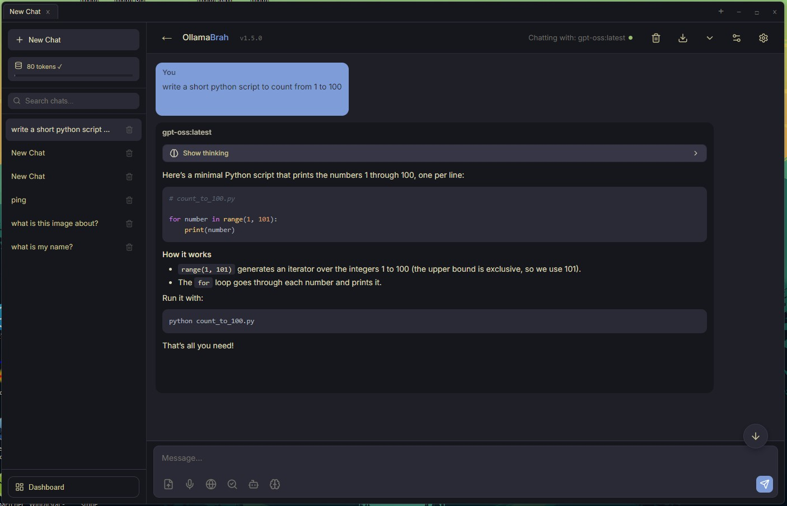
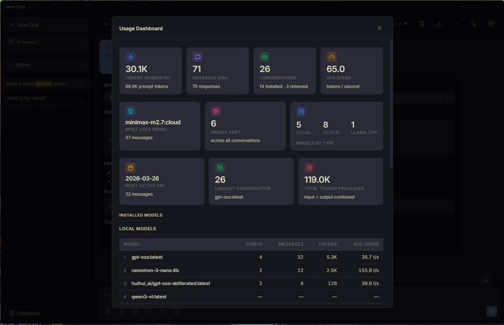
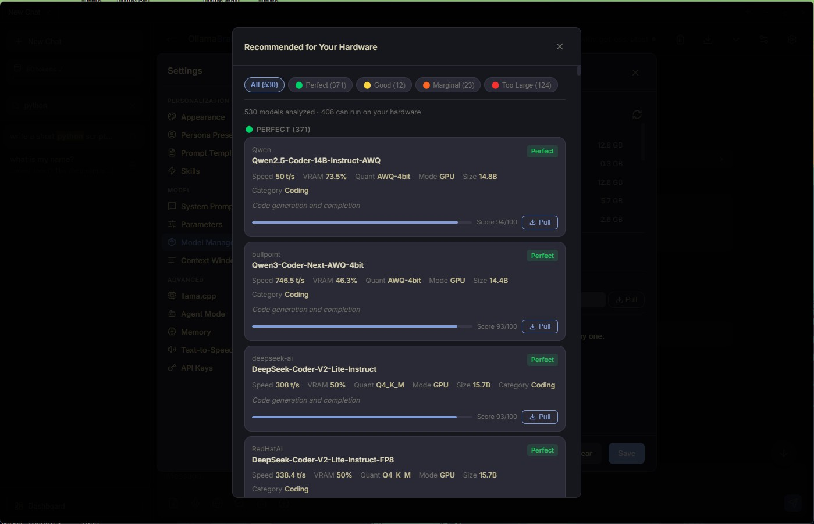
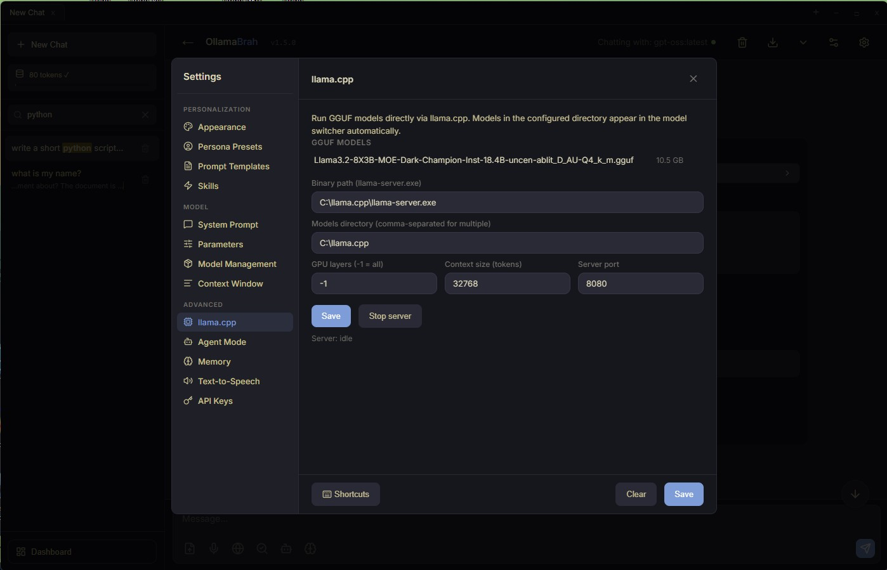
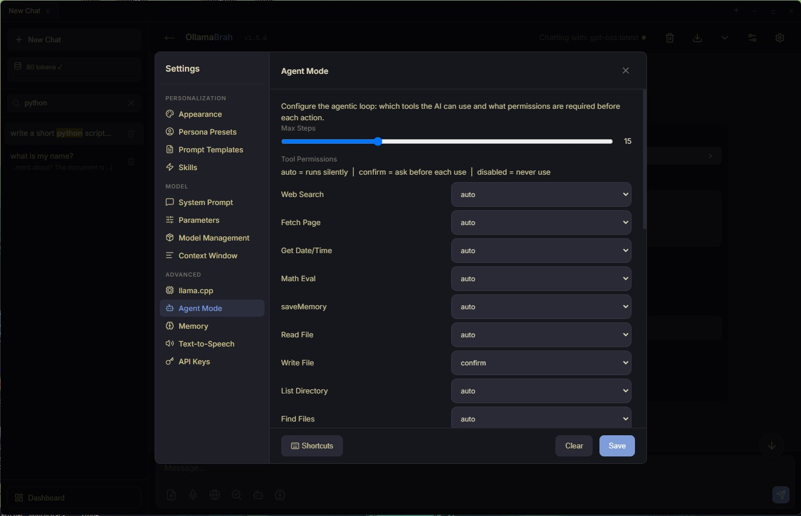
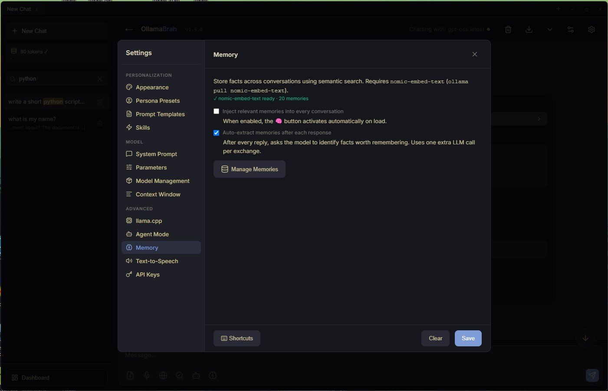
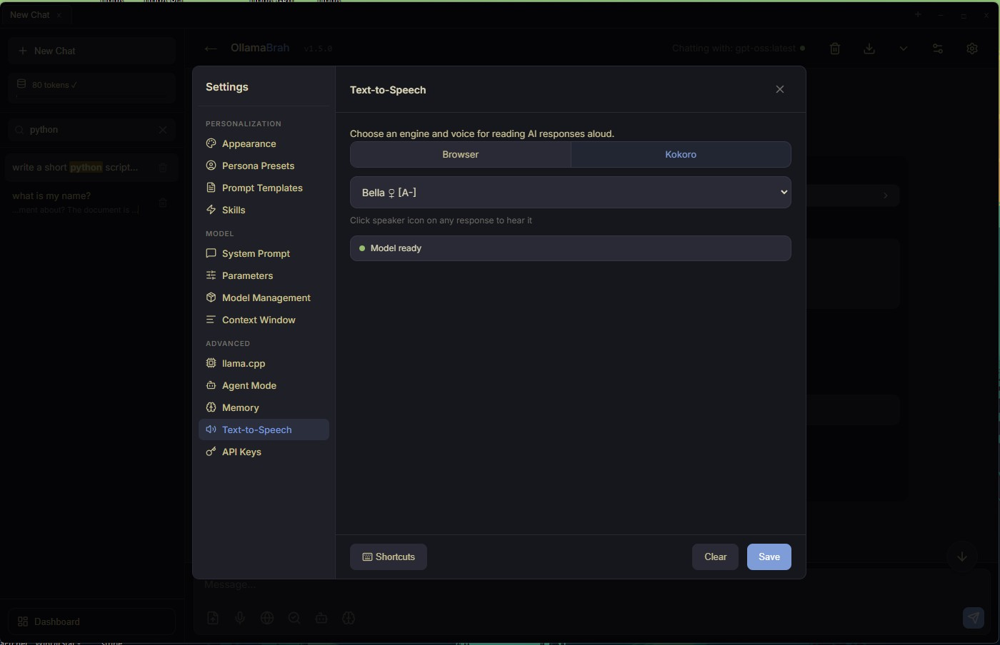
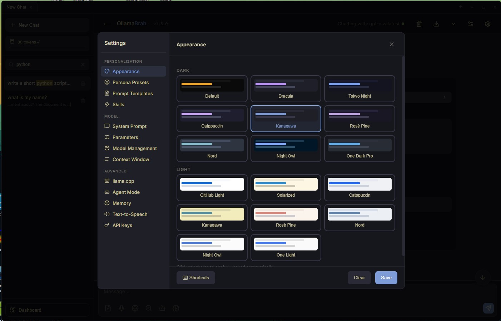

Chat with local models, understand PDFs and screenshots, use voice, memory, and safe local agents — all in a native desktop app without Docker or browser-tab sprawl.
v1.8.0 · Windows · MIT · no telemetry · no account

People want local AI. The problem is that most options feel like self-hosted platforms — you end up managing Docker containers, configuring reverse proxies, and maintaining a mini cloud stack just to chat with a model on your own hardware.
OllamaBrah is for people who want a serious local AI assistant as a desktop app. Install it. Open it. Pick a model. That's it.
An app, not a stack.
Local-model control without infrastructure overhead. Built for one person at one machine. No team admin. No telemetry. No subscription. Just your models, your files, your machine.
Use a real app instead of managing a browser-based AI platform. No tabs, no extension popups, no ports to remember after every reboot.
Built around Ollama and direct llama.cpp / GGUF workflows. GPU layers, context size, per-model profiles, and mmproj pairing — all configurable.
Chat with PDFs, screenshots, scanned documents, and code files using OCR and chunked context injection. Attachments that actually work.
Tool permissions, allowed directories, and blocked paths keep local automation controlled. Agents that do what you expect, and nothing else.
Semantic memory across sessions. Voice input via local Whisper. Kokoro TTS with sentence-streaming playback. Your assistant that actually remembers.
No team-admin clutter. No multi-tenant overhead. No enterprise feature creep. Just your models, your files, your machine, working your way.
!translate, !summarize, !fix-code and morechat.jpg · stream responses, fork history, search across all conversations

dashboard.jpg · tokens generated, messages sent, avg speed per model

hardware-recs.jpg · browse 530+ models filtered by your VRAM and quant preference

llama-cpp.jpg · configure binary path, GPU layers, context size, and server port

agent-mode.jpg · per-tool permissions — auto, confirm before use, or disabled

memory.jpg · persistent semantic memory with auto-extraction after each reply

tts.jpg · Kokoro local TTS with sentence-streaming playback, no cloud required

themes.jpg · Dracula, Tokyo Night, Catppuccin, Nord, Kanagawa, and more
| OllamaBrah | AnythingLLM | OpenWebUI | |
|---|---|---|---|
| Product shape | Desktop app (.exe) | Web platform | Web platform |
| Best fit | Solo local AI users | Small teams | Teams, API users |
| Installation | Run .exe installer | Docker or Node | Docker |
| Team features | — | Multi-user, roles | Multi-user, admin |
| Desktop-native | ✓ | — | — |
| llama.cpp + GGUF focus | ✓ | — | partial |
| File + OCR workflows | ✓ | limited | limited |
| Personal use simplicity | High | Medium | Medium |
AnythingLLM and OpenWebUI are solid platforms for teams. OllamaBrah is not trying to be a platform — it's a focused desktop app for the solo local AI user.
Your conversations, files, and model outputs never leave your machine. Web search is opt-in and clearly labeled. Everything else runs entirely on your hardware.
.exe from GitHub Releases — no winget or package manager needed
Built for Ollama and llama.cpp users who want real desktop workflows.